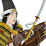

Sword Infantry
Sword Infantry
These units excel in close-quarters melee and are vulnerable to cavalry and bow or matchlock-armed units.
 General
General
The general gives a big morale boost to nearby friendly troops, but his army will suffer morale penalty if he is killed. Generals are best kept near frontlines to boost nearby troops, but should be protected by other units.
 Heavy Infantry
Heavy Infantry
These units are highly versatile as they are excellent in melee and able to withstand cavalry attacks, although they are not as strong in melee as katana infantry or as good against cavalry as yari infantry.
 Spear Cavalry
Spear Cavalry
These units have a deadly charge but are vulnerable in prolonged melee. They are good in combat against other cavalry but generally weak when fighting yari infantry.
- Missile Cavalry
These units are excellent for harassing enemies from a distance but are poor in melee. As they are able to fire and re-position they are difficult to pin down but should always be kept away from concentrated enemy missile units.
- Special Infantry
These units perform very specialised tasks on the battlefield and are vulnerable to units who perform broader roles.
 Bow Infantry
Bow Infantry
These units are fast-firing, long range missile units that are extremely vulnerable to cavalry and weak when in melee. On impact, arrows are more accurate but less damaging overall than matchlock balls.
 Heavy Ship
Heavy Ship
Heavy ships are "castles of the sea". Their large crew sizes make them ideal for conducting boarding actions, but they are slow and vulnerable to fire and cannons.
 Medium Ship
Medium Ship
Medium ships are good, all-round vessels with decent crew sizes, speed and manouverability. Their crew size still makes them vulnerable to boarding actions. They are slower than light ships.
 Trade Ship
Trade Ship
Trade ships are weak in combat but provide bountiful profit for a clan.
 Light Ship
Light Ship
Light ships are fast-moving with missile-armed crews. Their small crew sizes make them vulnerable to boarding actions.
- Multiplayer Units
All the units available in multiplayer are listed here by recruitment dojo.